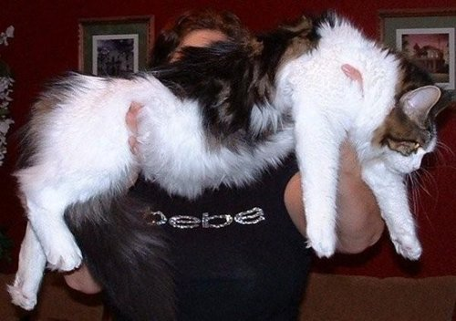

Maine Coons were first recorded in cat literature in 1861. Maine Coons were popular competitors at early cat shows in Boston and New York. A brown tabby female named ‘Cosie’ won Best Cat at the 1895 Madison Square Garden Show. It is unknown the true origin of the Maine Coon.
One myth is the mating of a domestic cat to a raccoon which is genetically impossible. It is thought the raccoon hybrid myth occurred due to the bushy tail of a Maine Coon.
The most accepted theory is that Vikings carried this cat breed over to hunt rats on ships. Aboard Viking ships the cats had to be hardy, strong, intelligent and fairly hairy due to the cold environment.
Maine Coons are known for being very dog like in temperament. In the feline world of cat fancy the coons are known as a “Gentle Giant” because of their impressive size but gentle nature. Maine Coons hold the Guinness World Record for The Longest Cat in the world.
The world record was given in 2012 to a five year old silver Maine Coon. Measuring in at a whooping 48.5 inches when stretched out. Adaptable to almost an situation is why “adaptable” is the Maine Coon middle name. They are happy with large families or in a single parent home. Loving children and other animals of all ages is right up the Maine Coons ally. Any company is good company in a Coon Cats eyes.
Hunting vermin keep prevent spread of disease and destruction of crops. Interesting fact, only the brown tabbies were called Maine Coon Cats in the begin while all other colors were referred to as Maine Shags.
Maine Coons are a large cat but can happily live in apartments if given proper mental stimulation.
Maine coons are very active cats with intelligence to boot. They are not going to be sleeping all day.
They are not destructive in nature with good manners. Having been a working cat breed for over a hundred years these cats like to pull their own weight.
Maine Coons come in a variety of about 75 different color combinations and two acceptable tabby patterns which are classic and mackerel. Maine coons can be with or with out white. If they have white it can be low or high depending on how much is found on the particular cat.
Maine Coons were originally working cats that where bread to endure a harsh climate. Distinctive smooth yet shaggy coat. It should be well proportioned and balanced in appearance with no part of the cat being exaggerated.
Quality should never be sacrificed for size. With an essentially amicable disposition, it has adapted to various environments.
Maine Coons need a diet that helps deal with the ingestion of hair since they are a longer hair breed. But finding a balanced food is always the main priority.
Breeders will suggest having hairball paste, a multivitamin and some other supplement vitamins such as Taurine.
Taurine is a amino acid that is ascertain to heart health helping muscles grow. Maine Coons also need to have food that is not to soft, remember that dry cat food is hard to help remove tarter build up on the teeth.
Feeding only wet soft foods can result in poor dental hygiene and even prevent baby teeth from falling out.